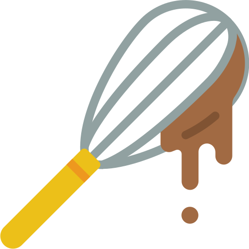

The Odin Recipes Project



@2025 Created for The Odin Project by lonymb.
This website is a student project and is not intended for commercial use. All recipes, images, and content are the property of their respective owners. No copyright infringement is intended.